Section 13: Blender Modeling
This lab continues our brief survey of Blender, concentrating on some of the features that can be used to create complex 3D models. The next section will look at Blender animation.
The Blender window has many features. I have made a Blender "window map" to help you identify some of those features, including some that are not mentioned in these notes.
Click here to see the window map.
{kind=link}
More Background
The previous section covered a lot of basic ground about Blender, but before looking at more advanced modeling, there is a little more background information that will be useful...
Duplicating; Data versus Object: An object on the screen has two aspects: The basic data for the object and the transform that has been applied to that data. The data for a mesh, for example, would be the coordinates of all its vertices in the mesh's own coordinate system. It also includes the material properties of the mesh. It's possible for objects to share the same data but have different transforms. Suppose you want to duplicate an object. There are two ways to do it. You can select the object and hit SHIFT-D. This will make a copy of the selected object. The copy will be in the exact same place as the original, but will be in "grab" mode so that you can immediately move it away from the original by moving the mouse. When you duplicate an object in this way, with SHIFT-D, you make copies of both the object and its data. That is, you really do get a complete copy. However, you can also duplicate the selected object by hitting ALT-D. When you use ALT-D, the two objects share the same data; only their transforms are different. This means that if you go into Edit mode and change one of the object's vertices, the same changes are applied to the other object. If you change the material on one of the objects, the other one changes as well. On the other hand, if you transform one of the objects by moving, scaling, or rotating it, the change does not affect the copy. This type of copy can actually be very useful—and it can save memory since there is only one copy of the object data.
Layers: Blender has layers, where each layer can contain its own collection of objects. When several layers are shown in the 3D View, their objects are not layered on top of each other. All the objects from all the visible layers are shown intermingled in one 3D scene. The point is that you can show and hide objects by turning the layers that contain them on and off. The main point is to allow you to work on objects in one layer without being confused by the objects in the other layers. Blender has exactly 20 layers, and they are controlled by a set of 20 small buttons at the bottom of the 3D window. (See the window map.) You can click a layer button to select just that layer. You can shift-click to select multiple layers. You can move objects from one layer to another: Select the object and hit the "m" key. A set of layer buttons will pop up where you can select the layer to which you want to move it. You can use invisible layers to store objects that you have worked on, but that you don't want to be visible at the moment.
Scene: A scene in Blender is really its own 3D world. Each scene can contain unique objects, but it is also possible for scenes to share objects. There is a menu/control at the top of the Blender window that you can use to create new scenes and to switch from one scene to another. (See the window map.) Click the icon at the left end of that control to switch among existing scenes. Click the center of the control to enter a new name for the current scene. Click the "X" on the right end to delete the current scene. Click the "+" sign to add a scene; when you do this you will get several options in a pop-up menu: "New" will create an empty scene. "Link Objects" will create a scene that contains the same objects as the current scene, with the same transforms; if you move an object in one scene, it also moves in the other one. You can then add new objects later that will be in only one of the scenes. You might use this, for example, if you want to set up a common static background world and them make several scenes that show different "actors" doing different things in different scenes, but with the same environment. With "Link Object Data", objects in the two scenes share the same data but not the same transform; this lets you have the same actors doing different things in different scenes, with the same environment. "Full Copy" copies both the transforms and data, so the scenes look the same originally, but really have nothing to do with each other.
Parenting: One object can be a parent of another. This allows you to create hierarchical models. The parent of an object is really just its parent in a scene graph. When you drag, rotate, or scale the parent, all its child objects are transformed as a group along with the parent. But child objects can still have their own transformations within the group. Furthermore, a child of one object can be a parent of another object, so you can do multi-level hierarchical graphics. If you want to group several objects, and there is no obvious parent, you should consider parenting all the objects to an empty object, made with the "Empty" command in the "Add" menu. To create a parent relationship, select the child object or objects, then shift-click the parent to add it to the selection as the last object added. Hit CONTROL-P. You will have to confirm that you want to make a parent. A dotted line will join the child to its parent. To delete a parent relationship, select the child, hit ALT-P, and select "Clear Parent" from the popup.
Naming: In Blender, objects, textures, materials, scenes, etc., all have names. Blender automatically assigns generic names such as "Cube.002" when you create or duplicate an object. Sometimes, you need to know something's name. An example is the "text on curve" feature that will be discussed below. To make it easier to identify an object, you might want to use a more meaningful name. Names are generally displayed in editable boxes. You can just click the box and enter a new name. For objects, the name is displayed in the "Object" controls in the properties editor panel. (See the window map.)
The Manipulator: The red/green/blue axes that are attached to the selected object do more than just show you which way the axes point. They are the "manipulator." You can use the left mouse button to drag one of the arrowheads of the manipulator to move the object along the corresponding axis. There is a button in the bar at the bottom of the 3D window that you can use to turn the manipulator off. There are also buttons for turning it into a rotation manipulator or a scaling manipulator.
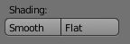 Smooth Shading: By default, mesh objects have a "faceted" appearance where the polygons that make up the mesh look flat. Sometimes this is correct, but often, it is not desirable, since you want to use the mesh as an approximation for a smooth object, such as a sphere. To select between flat shading and smooth shading for a mesh object, select the object and look in the "Object Tools" panel to the left of the 3D View. You'll find two "Shading" buttons, as shown here, for selecting the type of shading. Setting a mesh object to use smooth shading does not change the geometry of the object; it just uses different normal vectors, as we saw in Section 9.
More Hotkeys: The "z" key toggles between a wireframe view and a solid view of objects in the 3D window. A wireframe view can sometimes be better for modeling, especially in edit mode. SHIFT-S brings up a "Snap" menu that can help with positioning the 3D Cursor and the current selection. In edit mode, CONTROL-V, CONTROL-E, and CONTROL-F will bring up menus with various things that you can do to selected vertices, edges, and faces, respectively.
Text
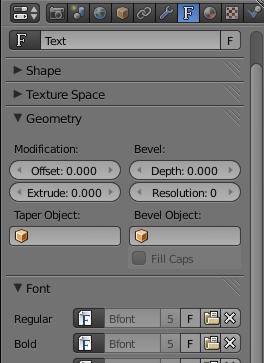 Blender can work with text, which it can render as either a flat 2D shape or as a 3D shape with added thickness.
To add add a text object to your scene, use the "Text" command in the "Add" menu. When you put a text object into edit mode, by pressing the TAB key while it is selected, you can use the keyboard to edit the characters that it contains; you will certainly want to do this, since the initial text is just the word "Text".
When a text object is selected, the button for selecting the Object Data controls in the properties editor panel shows an "F". Clicking the "F" reveals various useful controls, some of which are shown in the picture to the right. For example, there are buttons to control whether multi-line text is Right, Left, or Center justified, and there are numeric buttons to control character, word, and line spacing. You can also select the font to be used for the text. Blender has only one pretty basic built-in font, but you can select a font file from the file system to be used instead. Blender can work with Postscript Type 1, True Type, and Open Type fonts. To select a font file, click the small "folder" icon in the "Font" section of the text buttons. It is probably only necessary to set a "Regular" font. (For a zip file containing a small collection of fonts that I believe to be free, click here.)
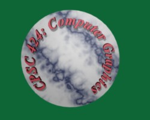 An interesting feature is that you can lay your text out along the shape of a curve. You need a curve object, which you can create as described below. You need to know the name of the curve object; you might want to change the name to something meaningful, as described above. Select the text object. Go to the object data controls for the text. Find the box labeled "Text on Curve" (just below the font selection), click the box and select the curve from the pop-up. The baseline of the text will curve to match the shape of the curve. You will likely have to scale the text—or the curve—to get it to fit nicely. Note that the text does not jump onto the curve; it just uses the curve object's shape, wherever the curve is located. You can even move the curve itself onto a hidden layer, if you want. If you change the shape of the curve or scale it, the text will follow the new shape. For the sample image, I used a Bezier circle as the curve.
Once you have your text, you can extrude and bevel it, exactly as described in the next section for curves, to get a nice 3D appearance.
Curves
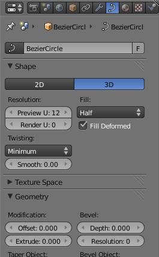 Blender has two types of curves: Bezier curves and NURBS curves. (There are also "paths", which are just a kind of NURBS curve.) To add a curve to your scene use the "Add" / "Curve" sub-menu. Bezier curves have "handles" that can be adjusted to change the shape of the curve. NURBS curves are similar, but the curve is determined entirely by control points and isn't constrained to pass through any particular points. NURBS curves are known for making smooth shapes. (There are also NURBS surfaces.)
By default, a curve is "3D," that is it doesn't have to lie in a plane. Usually, you want "2D" curves that are constrained to lie on a plane. To make a curve 2D, go to the "Object Data" controls in the properties editor panel, shown on the right. (When a curve is selected, the icon for "Object Data" looks like a curve connecting two points.) Click the "2D" button. You'll notice that a closed 2D curve is filled in in the 3D view.
When you use edit mode on a curve, you will see the control points. For a NURBS curve, they lie alongside the curve. For a Bezier curve, the control points are at the ends of "handles" that are attached to points on the curve. You can select control points and drag them (using the G key) or otherwise transform them. For a Bezier curve, you can also select the points on the curve and drag them. By default, the two ends of a handle line up, making a straight line; if you move one the other moves. (There are actually four types of handles: Auto, Vector, Aligned, and Free. Select one or more vertices in edit mode, and hit V to change the type. Auto is best when you are adding points to the curve.)
More important, you can extend a non-closed curve by adding new points. To do this, you must be in Edit mode. Ordinarily, you should select just one endpoint of the curve; the point that you add will be connected to the selected point, and the selection will move to the point that you just added, to make it easy to add a sequence of points. To add a point, control click with the left mouse button at the location where you want to add a point. You can continue left-control-clicking to add as many points as you want. (Generally, you should start with a basic Bezier or NURBS curve, rather than a circle. Select one of the endpoints, and work from there to add new points. For the Bezier curve, it's a good idea to hit V and change the type of vertex to Automatic before adding new points.)
If the curve is not already closed and you want to close it (that is, connect the end back to the beginning), just hit "ALT-C" while in edit mode. Hitting "ALT-C" key again will re-open the curve.
A curve can actually consist of several disconnected segments. If you left-control-click while editing a curve without selecting an endpoint, then you will start drawing a new, disconnected segment of the curve. You can also can use the Add menu, SHIFT-A, to add a new disconnected segment to a curve that you are editing in Edit mode; if you add another curve while a curve is in edit mode, you add a new segment to the existing curve rather than a separate curve.
A closed 2D curve bounds a region, which will be shown as a flat surface when you render the scene. When a curve self-intersects or has several disconnected segments, it's not completely clear what it means to be inside the curve. The rule is based on "winding number" at a point, which means the number of times that the curve encircles the point. If the curve circles the point an odd number of times, then the point is inside the curve; if the curve encircles it an even number of times, then the point is outside. This means, for example, that if you add a small Bezier circle inside a larger closed curve while editing the larger curve, you effectively cut the circle out of the area inside the big curve.
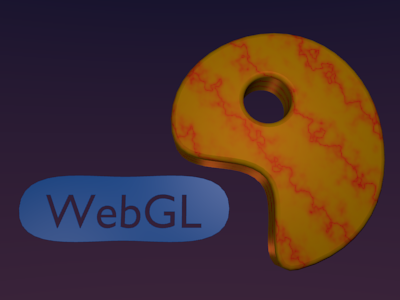 You can extend the 2D region inside a closed 2D curve into the third dimension by extruding the curve. Look in the curve's "Object Data" controls for a numerical input labeled "Extrude" (under "Geometry"). Increasing the value in this box extends the curve into a 3D object, perpendicularly to the plane in which it lies. Next to the "Extrude" box are a "Bevel Depth" box and a "Bevel Resolution" box. Increase the value in the "Bevel Depth" box to cut an edge off the 3D shape of the extruded curve. Increase the "Bevel Resolution" to round the edge rather than cut it off level. For the object on the right in the picture, I put a Bezier circle inside another closed Bezier curve (while in edit mode!) and set Extrude, Bevel Depth, and Bevel Resolution to be positive values.
It's possible to transform a Text object into a curve. Just select the text object, hit ALT-C and select "Curve from Mesh/Text". Once you've done this, you can edit the character outlines as curves. However, you can't convert the curves back to text. Furthermore, in edit mode, you can add other curve segments to the text curve. For the left object in the picture, I created the text, converted it to a curve, put it in edit mode, added a Bezier circle, and manipulated the vertices of the circle so that the circle surrounded the text. The inside of the text was effectively subtracted from the inside of the circle.
Proportional Editing
The rest of this section deals mostly with mesh modeling, and even then it only covers a small portion of all the options that are available.
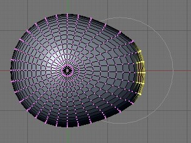 By default, when you transform selected vertices (or edges or faces) of a mesh object in edit mode, only the selected items are affected. This can lead to ugly, spiky objects! If you turn on Proportional Editing, then a vertex exerts a kind of force on neighboring vertices, so that if you drag a vertex, for example, nearby vertices are pulled along with it. There is a small button below the 3D view that turns on proportional editing. (See the window map.)
When proportional editing is turned on and you are transforming some vertices, a circle appears in the 3D window to show the "radius of influence", that is, the distance over which the force exerted by a vertex extends. You can change the size of the radius of influence using the scroll wheel on the mouse or the "PageUp" and "PageDown" keys. In the image at right, a sphere is in edit mode and a group of vertices is being dragged. The faint white circle shows the radius of influence, and you can see that vertices within that radius have shifted somewhat in the same direction as the selected vertices that are being dragged. The shape that results from this edit will be much nicer than if only the selected vertices moved. (Try selecting the equator of a sphere and scaling it up, with proportional editing enabled!)
Extruding
Extrusion is a powerful method for adding geometry to a mesh. Extrusion duplicates one or more geometry elements (vertices, edges, or faces), with the duplicate attached to the original mesh with more new edges or faces. The easiest way to do this is with "quick extrude" (although it doesn't offer the most control). To use it, put the object into edit mode and select the geometry elements that you want to duplicate. Mostly commonly, that will mean one of the faces of a mesh, although you can also do multiple faces or single edges. Selecting a face means selecting all the vertices of that face. Then all you have to do is CONTROL-left-click at some point, and the selected face will be duplicated at that point. (Note that this is the same way that you would extend a curve.) The original face is now de-selected, and the new duplicate face is selected instead, making it easy to move, scale, or rotate the new face and to add more faces at other locations.
For more control, select the geometry that you want to duplicate and press the "e" key. When you extrude using the "e" key, the duplicated geometry is in the same location as the original and will not be visible, but it is selected and in grab mode so that you can easily move it away from that location.
As an example, I started with a mesh cube and extruded various faces, applying various scaling factors along the way. Here is what it looked like in the Blender 3D window in edit mode:

Subdivision Surface Modifier
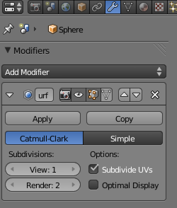 Modifiers are a powerful feature that can affect the rendered view of a mesh object, without actually modifying the underlying geometry. To apply a modifier to an object, first select the object. Then go to the "Object Modifiers" controls in the properties editor panel (monkey-wrench icon). Click the "Add Modifier" button to choose from a large selection of modifiers. I only understand a few of them. At the bottom of the list, you will see the "Subdivision Surface" modifier.
The "Subdivision Surface" modifier is useful for modeling shapes, particularly when used with extrusion. It makes a smoother shape that uses the original shape as an outline, sort of like the control points of a NURBS curve. Try adding a "Subdivision Surface" modifier to a cube that you have extruded a few times. A small panel will appear under the "Add Modifier" button with controls for the modifier, as shown at the right. The "View" and "Render" buttons, under "Subdivisions," are important controls for sub-surfaces. Increasing the level increases the number of polygons on the sub-surface, and hence its smoothness. The "Render" control selects the number of levels that will be used when an image of object is rendered. The "View" control selects how many levels you see in the 3D window (which you might want to make smaller than the render level to speed up drawing of the window). You should also note the "Apply" button, which will discard the original surface and replace it with the sub-surface. You might do this if you want to start editing the sub-surface itself—but you won't be able to get the original back (except with Undo). The "X" can be used to remove the modifier from the object. Here is a rendered image produced when the a Subdivision Surface modifier was applied to the extruded cube shown above:
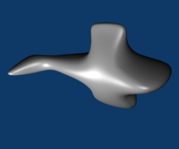
Hint: I was going after a fish shape, but I should probably have used Curve objects for fins and attached them to a fishy body!
Array Modifier
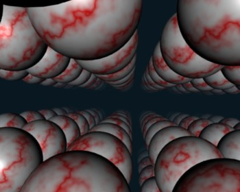 Another modifier, the "Array" modifier, can make duplicates of an object and arrange them in a line. Just add the modifier to an object, adjust the distance between objects in the X, Y, and Z directions, and use the "Count" control to specify how many objects you want. (There are more advanced ways of arranging the duplicates, but I won't cover them here.)
In the picture shown at the right, I started with a single sphere and applied three Array modifiers to it. (You can add multiple operators to an object, and they will be applied in sequence.) The first modifier turned the sphere into a line of spheres in the X direction. The second modifier duplicated the line in the Y direction to give a grid of spheres. The third duplicated the grid in the Z direction to give 3D formation of spheres. In the image, I placed the camera in the grid, looking along a line of spheres, with a Sun shining in the same direction that the camera is looking. I added some Mist (in the World controls) to make the spheres fade a bit in the distance. (I had to set a fairly large "Dist" value for the mist, or else I didn't see anything at all.)
Displace Modifier
As an example of something different that you can do with a texture, we look at displacement mapping, where the vertices of a mesh are moved, or displaced, by an amount that depends on a texture. You can do this with a "Displace" modifier.
Displacement mapping can work well for a Sphere, where it can add a rough, planet-like surface. For terrain, you can apply a Displace modifier to a Mesh "Grid" object. A Grid is just a subdivided plane. To get nice terrain, you need a lot of vertices, so change the "X Res" and "Y Res" of the grid to 100 or higher when you create it. (The setting is in the "Tools" panel just after you add the grid to the scene.) Similarly, if you want to apply a Displace modifier to a UVSphere, you should increase the number of Segments and Rings.
To use a texture as a displacement map, you should first add a Material to the object, then add a texture. A procedural texture like Marble or Clouds can work well for this. A grayscale image could also work. (In fact, there are images that are meant precisely for creating terrain using this technique.) You might want to change the name of the texture, so you can identify it easily.
Then, go to the "Modifier" controls and add a "Displace" modifier. To set the texture to be used, click the texture icon under "Texture" to get a list of existing textures. From the list, select the texture that you added to the object.
You should see the effect immediately, though you might have to rotate the view to see it clearly. You might want to decrease the "Strength" of the modifier to make the displacement effect less extreme. Also you will probably want to hit the "Smooth" button in the "Tools" panel to get a smooth-looking surface.
If you are using a texture for a displacement map, you probably don't want it to affect the color of the object. Go to the texture controls and look under "Influence". You will see that the texture is set to influence the diffuse "Color" of the material. Uncheck that box to turn off the effect on color (although leaving it on can have a nice effect too.)
Here are two examples of Displace modifiers applied to Grids to produce terrain. I used a Marble texture for the image on the left, a Clouds texture on the right. In both cases, I turned down the specular intensity to zero to avoid having glossy ground. On the right, I added a separate, smooth blue plane that lies above the terrain in some places and below it in others. On the left, I let the texture influence the color as well as the Displace modifier. This is a nice effect, since it makes the color correlate with the height.
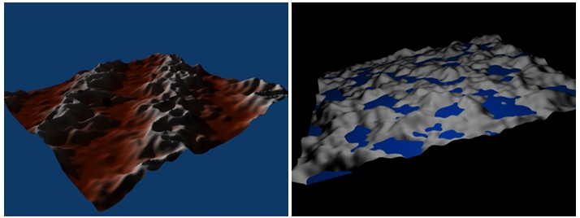
More on Lamps, Materials, and Textures
There are many fun features of lights, materials, and textures that weren't mentioned in the previous section. I'll talk about a few here. Some of them use Blender's built-in basic ray-tracing abilities that can create effects that are difficult to achieve otherwise. Ray-tracing is an advanced rendering technique that handles shadows, reflections, and transparency very well.
Lamps come in several varieties. A Point lamp radiates light in all directions from a point. A Sun shines parallel rays from a given direction. A Spot acts like a spotlight. Their properties can be set in the Lamp "Object Data" controls in the properties editor panel. (The icon looks like a tiny point light with four arrows radiating out from it). There is a control for setting the color of the light and an Energy input that sets its general level of brightness. There is a "Ray Shadow" button that you can click to turn on ray-tracing-based shadows. Shadows are off for a newly created light, which means that that particular light will not cast shadows. (However, the light in the default Blender start-up configuration has shadows turned on.) For spotlights, an older type of shadow algorithm, "Buf. Shadow", is also available. Before ray-tracing was added to Blender, this was the only type of shadows that were available, and only spotlights could cast shadows. Note that if a light is not set to cast shadows, then it will shine right through objects, and this is a desirable effect in some cases.
Lighting a scene properly can be difficult. One guideline is to try three-point lighting. One approach uses a light near and a little above the camera, another dimmer light off to the side and below the camera, and a third light illuminating the scene from behind.
You can make objects translucent. To do that, you have to turn on "Transparency" in the material buttons of the object. Furthermore, you have to reduce the Alpha value in the transparency controls. (There is a separate control for "Specular" under transparency because you might want a transparent object that still has strong specular reflection, as with glass.) The default transparency calculations use something called Z-Transparency. Change this to "Raytrace" to get ray-tracing based transparency. (You can also get "refraction" in a transparent object. For this, set the IOR slider to a value greater than 1—probably only a little greater. IOR stands for "index of refraction.")
One of the nicest things about ray-tracing is its support for reflection of one object in another, which is very hard to do without ray-tracing. To make an object reflective in this sense, you have to turn on "Mirror", which you will find beneath Transparency in the material controls. You also need to set the value of the "Reflection" slider in the Mirror section to be greater than 0 to make the surface reflective. Otherwise, you won't see any reflection at all on the surface.
When working with textures, you should take note of the "Mapping" and "Influence" controls, which are part of the texture controls.
The "Mapping" section controls how the texture's texture coordinates map onto the surface. The "Cube", "Tube", and "Sphere" buttons can produce better coordinates for some shapes. You can also set up a texture transform, by setting values under "Size" and "Offset."
The "Influence" section tells what is done with the texture. We have only talked about applying textures to the diffuse color of a material, which is the default. The "Color" button under Diffuse turns this behavior on and off. But the other buttons enable other ways of using the texture data. Generally, they make sense mostly with a grayscale texture like the procedural Marble and Clouds textures. Here are the options that I sometimes find useful: "Normal", under Geometry, makes the texture affect normal vectors; this can give a bumpy appearance to the surface, an effect known as a "bump map" (n this case, the DVar input controls the magnitude of the effect). "Alpha", under Diffuse, allows the texture to make parts of the surface more or less transparent; in order to get this to work, you have to change the "Blend" selection below the buttons from "Mix" to "Multiply", and you have to enable Transparency in the Material settings. "Emit" affects emissive color, which makes the surface look like it's giving off light. (There is also a useful "Negative" checkbox that will invert the effect of the texture.)
This picture shows a sphere with a bump map inside a cylinder that has a texture affecting its alpha:
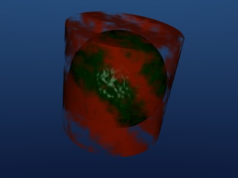